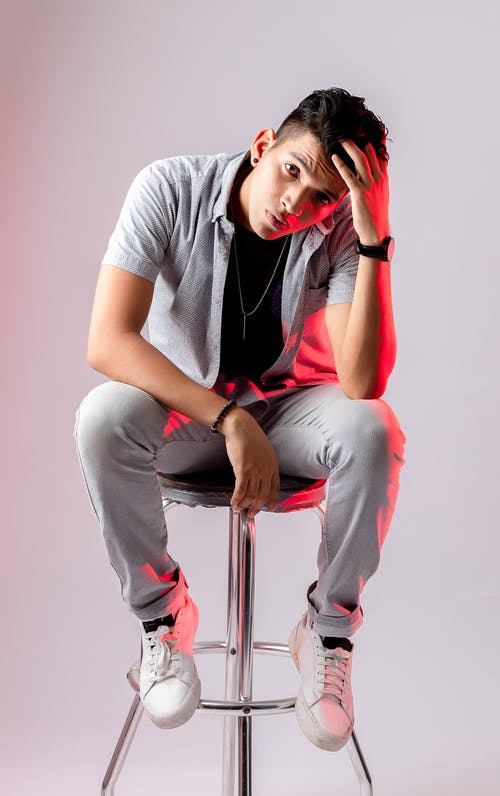
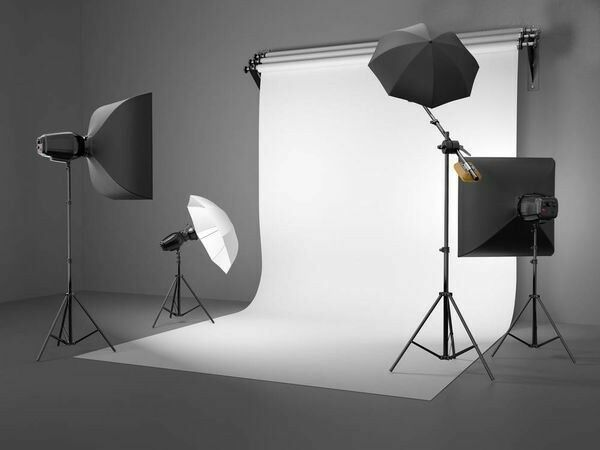

关于我们

About Us
ABOUT US
——每一张照片,都是时光的标本——
关于我们
拍摄照片就是要屏住呼吸，全部的官能集中在一个点 上,捕捉稍纵即逝的现实。就在那个瞬间,抓住一幅影像就成了巨大的身体和心灵的快乐。让我着迷的是，我所做的一切有着各种不同的感觉。我不是一个事先进行策划的摄影师。 我看到张照片，于是拍了下来。如果有机会的话,我随时都可以出去拍照。你不必去寻找照片。素材是十分丰富的。你出去，照片就在盯着你看。
曾经我说过，摄影是我的一种爱好。但是老师说，摄影不是一种爱好，是对生活的一种态度。这世间的一切，有公平的不公平的，有欢喜的，悲愤的，伤心的… 这一切只有通过摄影师敏锐的镜头去扑捉。。爱摄影，才能更加爱生活。谢谢你摄影的世界， 谢谢你把我送上了天堂，脱掉了充满虚伪的衣裳，灵魂从此漂向远方……此 生，永不放弃。 手中的相机是我的慧眼。不管同行的路途上是晴是雨，我带它游走世界，留存珍惜，审视生活。清脆的快门声诞生的每一桢影像都代表着我们的思想！

ABOUT US
——每一张照片,都是时光的标本——
我们的摄影理念
对我来说，照相机就是一本写生簿，捕捉即时灵感的工具，你要在瞬间对你所看到的一切提问并做出决定，通过一个有限的取景器向人们解释这个世界发生了什么，这是一种最简单直接的表达，却也需要你集中精力、训练有素、敏感并有几何构图的美感。
要记住，相机不过是个工具，无论技术有多先进，都无法取代艺术的眼光。学习技术必不可少的，但真正成为一位伟大摄影师的关键是灵活运用技术去表达自己潜意识中的某些东西，用美学的形式去表达自己的感受。换句话说，也就是要用心去拍摄。摄影其实和音乐、诗歌一样，最高境界是用不断升华的感觉来创作。让自己兴奋起来，在摄影中充分调动情绪，将感觉融入到你的拍摄对象中去。
